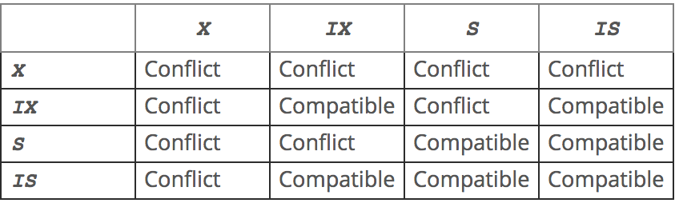

<!DOCTYPE html>
<html>
<head><meta name="generator" content="Hexo 3.8.0">
  <meta charset="utf-8">
  

  
  <title>Mysql Locks | Imoko</title>
  <meta name="viewport" content="width=device-width, initial-scale=1, maximum-scale=1">
  <meta name="description" content="###transaction locks 维护在不同的Isolation level下数据库的Atomicity和Consistency两大基本特性。  table locks 对整个表加锁，影响所有记录。通常用在DDL语句中，如DELETE TABLE,ALTER TABLE等。  row locks 对一行记录加锁，只影响一条记录。通常用在DML语句中，如INSERT, UPDATE, DEL">
<meta property="og:type" content="article">
<meta property="og:title" content="Mysql Locks">
<meta property="og:url" content="http://yoursite.com/2018/11/22/DBs_mysql_locks/index.html">
<meta property="og:site_name" content="Imoko">
<meta property="og:description" content="###transaction locks 维护在不同的Isolation level下数据库的Atomicity和Consistency两大基本特性。  table locks 对整个表加锁，影响所有记录。通常用在DDL语句中，如DELETE TABLE,ALTER TABLE等。  row locks 对一行记录加锁，只影响一条记录。通常用在DML语句中，如INSERT, UPDATE, DEL">
<meta property="og:locale" content="default">
<meta property="og:image" content="http://yoursite.com/2018/11/22/DBs_mysql_locks/image-20180912002757181.png">
<meta property="og:image" content="http://yoursite.com/2018/11/22/DBs_mysql_locks/733013-20180508101949424-938931340.png">
<meta property="og:image" content="http://yoursite.com/2018/11/22/DBs_mysql_locks/733013-20180508104623183-690986409.png">
<meta property="og:updated_time" content="2018-11-22T06:24:29.000Z">
<meta name="twitter:card" content="summary">
<meta name="twitter:title" content="Mysql Locks">
<meta name="twitter:description" content="###transaction locks 维护在不同的Isolation level下数据库的Atomicity和Consistency两大基本特性。  table locks 对整个表加锁，影响所有记录。通常用在DDL语句中，如DELETE TABLE,ALTER TABLE等。  row locks 对一行记录加锁，只影响一条记录。通常用在DML语句中，如INSERT, UPDATE, DEL">
<meta name="twitter:image" content="http://yoursite.com/2018/11/22/DBs_mysql_locks/image-20180912002757181.png">
  
    <link rel="alternate" href="/atom.xml" title="Imoko" type="application/atom+xml">
  
  
    <link rel="icon" href="/favicon.png">
  
  
    <link href="//fonts.googleapis.com/css?family=Source+Code+Pro" rel="stylesheet" type="text/css">
  
  <link rel="stylesheet" href="/css/style.css">
</head>
</html>
<body>
  <div id="container">
    <div id="wrap">
      <header id="header">
  <div id="banner"></div>
  <div id="header-outer" class="outer">
    <div id="header-title" class="inner">
      <h1 id="logo-wrap">
        <a href="/" id="logo">Imoko</a>
      </h1>
      
    </div>
    <div id="header-inner" class="inner">
      <nav id="main-nav">
        <a id="main-nav-toggle" class="nav-icon"></a>
        
          <a class="main-nav-link" href="/">Home</a>
        
          <a class="main-nav-link" href="/archives">Archives</a>
        
      </nav>
      <nav id="sub-nav">
        
          <a id="nav-rss-link" class="nav-icon" href="/atom.xml" title="RSS Feed"></a>
        
        <a id="nav-search-btn" class="nav-icon" title="Search"></a>
      </nav>
      <div id="search-form-wrap">
        <form action="//google.com/search" method="get" accept-charset="UTF-8" class="search-form"><input type="search" name="q" class="search-form-input" placeholder="Search"><button type="submit" class="search-form-submit">&#xF002;</button><input type="hidden" name="sitesearch" value="http://yoursite.com"></form>
      </div>
    </div>
  </div>
</header>
      <div class="outer">
        <section id="main"><article id="post-DBs_mysql_locks" class="article article-type-post" itemscope="" itemprop="blogPost">
  <div class="article-meta">
    <a href="/2018/11/22/DBs_mysql_locks/" class="article-date">
  <time datetime="2018-11-22T06:24:29.000Z" itemprop="datePublished">2018-11-22</time>
</a>
    
  </div>
  <div class="article-inner">
    
    
      <header class="article-header">
        
  
    <h1 class="article-title" itemprop="name">
      Mysql Locks
    </h1>
  

      </header>
    
    <div class="article-entry" itemprop="articleBody">
      
        <p>###transaction locks</p>
<p>维护在不同的Isolation level下数据库的<strong>Atomicity</strong>和<strong>Consistency</strong>两大基本特性。</p>
<ul>
<li><p><strong>table locks</strong></p>
<p>对整个表加锁，影响所有记录。通常用在DDL语句中，如DELETE TABLE,ALTER TABLE等。</p>
</li>
<li><p><strong>row locks</strong></p>
<p>对一行记录加锁，只影响一条记录。通常用在DML语句中，如INSERT, UPDATE, DELETE等。</p>
</li>
</ul>
<p>InnoDB定义了如下的lock mode:</p>
<figure class="highlight c"><table><tr><td class="gutter"><pre><span class="line">1</span><br><span class="line">2</span><br><span class="line">3</span><br><span class="line">4</span><br><span class="line">5</span><br><span class="line">6</span><br><span class="line">7</span><br><span class="line">8</span><br></pre></td><td class="code"><pre><span class="line"><span class="comment">/* Basic lock modes */</span></span><br><span class="line"><span class="keyword">enum</span> lock_mode &#123;</span><br><span class="line">LOCK_IS = <span class="number">0</span>,     <span class="comment">/* intention shared */</span></span><br><span class="line">LOCK_IX,     <span class="comment">/* intention exclusive */</span></span><br><span class="line">LOCK_S,          <span class="comment">/* shared */</span></span><br><span class="line">LOCK_X,          <span class="comment">/* exclusive */</span></span><br><span class="line">LOCK_AUTO_INC,     <span class="comment">/* locks the auto-inc counter of a table</span></span><br><span class="line"><span class="comment">......</span></span><br></pre></td></tr></table></figure>
<ul>
<li><p>shared lock （S) 容许获得锁的事务去 读一行</p>
</li>
<li><p>exclusive lock （X) 容许获得锁的事务去更新或者删除一行</p>
</li>
<li><p>Intention shared （IS）  获取IS表示事务希望获取S锁（或更高）。在获取这一行的S锁之前，需要先获取表的IS</p>
</li>
<li><p>Intention exclusive （IX） 获取IX表示事务希望获取X锁。在获取这一行的X锁之前，需要先获取表的IX。</p>
</li>
</ul>
<p>####lock type compatibility：</p>
<p></p>
<p>####解释：</p>
<p>S，X锁，就像是读写锁，S是读锁，X是写锁。（注：S锁只有<code>IN SHARE MODE</code>才会加。一般的select是consistent read）。在给一行记录加锁前，首先要给该表加意向锁。</p>
<p>####意向锁的作用：</p>
<figure class="highlight plain"><table><tr><td class="gutter"><pre><span class="line">1</span><br></pre></td><td class="code"><pre><span class="line">The main purpose of intention locks is to show that someone is locking a row, or going to lock a row in the table.</span><br></pre></td></tr></table></figure>
<p>为方便检测table lock 和 row lock之间的冲突，引入了意向锁。 </p>
<p>当再向一个表添加表级X锁的时候</p>
<ul>
<li>如果没有意向锁的话，则需要遍历所有整个表判断是否有行锁的存在，以免发生冲突</li>
<li>如果有了意向锁，只需要判断该意向锁与即将添加的表级锁是否兼容即可。因为意向锁的存在代表了，有行级锁的存在或者即将有行级锁的存在。因而无需遍历整个表，即可获取结果</li>
</ul>
<p>###内存锁</p>
<p> 为了维护内存结构的一致性，比如Dictionary cache、sync array、trx system等结构。 InnoDB并没有直接使用glibc提供的库，而是自己封装了两类：</p>
<ol>
<li>一类是mutex，实现内存结构的串行化访问</li>
<li>一类是rw lock，实现读写阻塞，读读并发的访问的读写锁</li>
</ol>
<p>###Row Level Lock 细分</p>
<p>####Record Locks </p>
<p>在index records上的锁。比方说：</p>
<figure class="highlight sql"><table><tr><td class="gutter"><pre><span class="line">1</span><br></pre></td><td class="code"><pre><span class="line"><span class="keyword">SELECT</span> c1 <span class="keyword">FROM</span> t <span class="keyword">WHERE</span> c1 = <span class="number">10</span> <span class="keyword">FOR</span> <span class="keyword">UPDATE</span>;</span><br></pre></td></tr></table></figure>
<p>这个就为c1 = 10的这个索引加了锁，防止其他事物对所有c1=10的行做inserting, updating,deleting操作。</p>
<h4 id="Gap-Locks"><a href="#Gap-Locks" class="headerlink" title="Gap Locks"></a>Gap Locks</h4><p>是一种在index records之间的一种锁。</p>
<figure class="highlight sql"><table><tr><td class="gutter"><pre><span class="line">1</span><br></pre></td><td class="code"><pre><span class="line"><span class="keyword">SELECT</span> c1 <span class="keyword">FROM</span> t <span class="keyword">WHERE</span> c1 <span class="keyword">BETWEEN</span> <span class="number">10</span> <span class="keyword">and</span> <span class="number">20</span> <span class="keyword">FOR</span> <span class="keyword">UPDATE</span>;</span><br></pre></td></tr></table></figure>
<p>阻止其他事物向c1 的10～20区间内，<strong>插入</strong>数据。（只有插入）</p>
<p>在gap lock锁定的范围内，可以有0～n个index records。</p>
<p>gap lock 是在性能和一致性上的一个折衷，只在某些事物隔离级别下生效。</p>
<p>特点：</p>
<p>1 使用unique index来查单条的语句不会用到gap lock</p>
<p>2 gap lock之间不会有冲突，X-gap lock 和S-gap lock没什么区别。</p>
<p>3 gap lock只是为了防止向一个区间内插入</p>
<h4 id="Next-Key-Locks"><a href="#Next-Key-Locks" class="headerlink" title="Next-Key Locks"></a>Next-Key Locks</h4><p>是record lock 和gap lock的组合：当前index record 的 record lock + 当前index record之前的区域的 gap lock。</p>
<p>举例：index record为10，11，13，20，则next-key lock可以有以下几种可能：</p>
<figure class="highlight plain"><table><tr><td class="gutter"><pre><span class="line">1</span><br><span class="line">2</span><br><span class="line">3</span><br><span class="line">4</span><br><span class="line">5</span><br></pre></td><td class="code"><pre><span class="line">(negative infinity, 10]</span><br><span class="line">(10, 11]</span><br><span class="line">(11, 13]</span><br><span class="line">(13, 20]</span><br><span class="line">(20, positive infinity)</span><br></pre></td></tr></table></figure>
<p>作用：</p>
<figure class="highlight plain"><table><tr><td class="gutter"><pre><span class="line">1</span><br></pre></td><td class="code"><pre><span class="line">By default, InnoDB operates in REPEATABLE READ transaction isolation level. In this case, InnoDB uses next-key locks for searches and index scans, which prevents phantom rows</span><br></pre></td></tr></table></figure>
<p>InnoDB使用next-key locks 来防止幻读。</p>
<p>幻读，就是在一个事物内，两次select，第二次得到了一个新的row。</p>
<p>所以在锁住当前记录的同事，要把他到前一个记录的‘gap’也锁住。才能保证。不会出现新的纪录。</p>
<h4 id="Insert-Intention-Locks"><a href="#Insert-Intention-Locks" class="headerlink" title="Insert Intention Locks"></a>Insert Intention Locks</h4><p>//TODO</p>
<h4 id="AUTO-INC-Locks"><a href="#AUTO-INC-Locks" class="headerlink" title="AUTO-INC Locks"></a>AUTO-INC Locks</h4><p>是一个table level的锁，当传入有AUTO_INCREMENT列的字段的时候。如果一个事物在插入几条记录，其他事物也想插入时，必须等待。否则第一个事物就无法获取到连续的自增值。当然，自增序列的顺序的可预见性和插入的并发性能，也是一个权衡的点，可以通过<code>innodb_autoinc_lock_mode</code>来设置。</p>
<p>具体参考：<a href="https://dev.mysql.com/doc/refman/8.0/en/innodb-auto-increment-handling.html" target="_blank" rel="noopener">https://dev.mysql.com/doc/refman/8.0/en/innodb-auto-increment-handling.html</a></p>
<p>###</p>
<p>###Transaction Isolation Levels</p>
<p>事物隔离级别，是ACID中的I。</p>
<p>前置知识：</p>
<p>Consistent Reads： 无锁的select，（plain select）,MVCC</p>
<figure class="highlight plain"><table><tr><td class="gutter"><pre><span class="line">1</span><br></pre></td><td class="code"><pre><span class="line">A consistent read means that InnoDB uses multi-versioning to present to a query a snapshot of the database at a point in time.</span><br></pre></td></tr></table></figure>
<p>Locking Reads：<code>SELECT</code> with <code>FOR UPDATE</code> or <code>FOR SHARE</code>, <code>UPDATE</code>, and <code>DELETE</code> statements</p>
<h4 id="Repeatalbe-Read"><a href="#Repeatalbe-Read" class="headerlink" title="Repeatalbe Read"></a>Repeatalbe Read</h4><p>innoDB默认隔离级别。</p>
<ul>
<li>Consistent Reads，即无锁的select，读的都是事物中第一个select得到的snapshot。</li>
<li>Locking Reads <ul>
<li>使用了唯一索引：只有record lock</li>
<li>没使用惟一索引：使用next-key lock 锁住区间。</li>
</ul>
</li>
</ul>
<h4 id="Read-Commited"><a href="#Read-Commited" class="headerlink" title="Read Commited"></a>Read Commited</h4><ul>
<li><p>Consistent Reads：每一个select（即使在同一个事物内）都是一个新的snapshot。</p>
</li>
<li><p>Locking Reads：只上Record lock，无gap lock或next-lock</p>
</li>
</ul>
<p>所以，<code>幻读</code>出现。</p>
<p>####READ UNCOMMITTED</p>
<h4 id="SERIALIZABLE"><a href="#SERIALIZABLE" class="headerlink" title="SERIALIZABLE"></a>SERIALIZABLE</h4><h3 id="Locks-Set-by-Different-SQL-Statements-in-InnoDB"><a href="#Locks-Set-by-Different-SQL-Statements-in-InnoDB" class="headerlink" title="Locks Set by Different SQL Statements in InnoDB"></a>Locks Set by Different SQL Statements in InnoDB</h3><ul>
<li><code>Select ... from...</code>是consistent read,读一个snapshot。除非是SERIALIZABLE隔离级别，这个时候，设置shared next-key lock。</li>
<li><code>select ... for update</code> 和 <code>select ... for share</code>会加X next-key lock。如果是唯一索引，会加<code>record lock</code>。</li>
<li><code>Update...where..</code>会加 X next-key lock。如果是唯一索引，会加<code>record lock</code>。</li>
<li><code>delete from ... where</code>加X next-key lock。如果是唯一索引，会加<code>record lock</code>。</li>
<li><code>insert</code>会给当前插入的行加<code>record lock</code>。</li>
</ul>
<p>参考：<a href="https://dev.mysql.com/doc/refman/8.0/en/innodb-locks-set.html" target="_blank" rel="noopener">https://dev.mysql.com/doc/refman/8.0/en/innodb-locks-set.html</a></p>
<h3 id="Consistent-Reads"><a href="#Consistent-Reads" class="headerlink" title="Consistent Reads"></a>Consistent Reads</h3><p>consistent reads的含义是InnodB使用multi-versioning去给查询提供一个数据库的snapshot。查询只能看到这个点之前提交的事物的改动，而对之后的一无所知。</p>
<p>Consistent read is the default mode in which <code>InnoDB</code> processes <a href="https://dev.mysql.com/doc/refman/8.0/en/select.html" target="_blank" rel="noopener"><code>SELECT</code></a> statements in <a href="https://dev.mysql.com/doc/refman/8.0/en/innodb-transaction-isolation-levels.html#isolevel_read-committed" target="_blank" rel="noopener"><code>READ COMMITTED</code></a>and <a href="https://dev.mysql.com/doc/refman/8.0/en/innodb-transaction-isolation-levels.html#isolevel_repeatable-read" target="_blank" rel="noopener"><code>REPEATABLE READ</code></a> isolation levels.</p>
<p> A consistent read does not set any locks on the tables it accesses,</p>
<p>If you want to see the “freshest” state of the database, use either the <a href="https://dev.mysql.com/doc/refman/8.0/en/innodb-transaction-isolation-levels.html#isolevel_read-committed" target="_blank" rel="noopener"><code>READ COMMITTED</code></a> isolation level or a <a href="https://dev.mysql.com/doc/refman/8.0/en/glossary.html#glos_locking_read" target="_blank" rel="noopener">locking read</a>:</p>
<figure class="highlight sql"><table><tr><td class="gutter"><pre><span class="line">1</span><br></pre></td><td class="code"><pre><span class="line"><span class="keyword">SELECT</span> * <span class="keyword">FROM</span> t <span class="keyword">FOR</span> <span class="keyword">SHARE</span>;</span><br></pre></td></tr></table></figure>
<p>参考：<a href="https://dev.mysql.com/doc/refman/8.0/en/innodb-consistent-read.html" target="_blank" rel="noopener">https://dev.mysql.com/doc/refman/8.0/en/innodb-consistent-read.html</a></p>
<h3 id="Undo"><a href="#Undo" class="headerlink" title="Undo"></a>Undo</h3><p>Undo Log是为了实现事务的<strong>原子性</strong>，在MySQL数据库InnoDB存储引擎中，还用UndoLog来实现多版本并发控制(简称：MVCC)。 -事务的原子性(Atomicity) 事务中的所有操作，要么全部完成，要么不做任何操作，不能只做部分操作。如果在执行的过程中发了错误，要回滚(Rollback)到事务开始前的状态，就像这个事务从来没有执行过。</p>
<p>参考：<a href="https://www.cnblogs.com/kongzhongqijing/articles/7905051.html" target="_blank" rel="noopener">https://www.cnblogs.com/kongzhongqijing/articles/7905051.html</a></p>
<h3 id="Redo"><a href="#Redo" class="headerlink" title="Redo"></a>Redo</h3><p>记录的是新数据的备份。在事务提交前，只要将Redo Log持久化即可，不需要将数据持久化。当系统崩溃时，虽然数据没有持久化，<br>但是RedoLog已经持久化。系统可以根据RedoLog的内容，将所有数据恢复到最新的状态。</p>
<p>InnoDB有<code>buffer pool</code>（简称bp）。bp是数据库页面的缓存，对InnoDB的任何修改操作都会首先在bp的page上进行，然后这样的页面将被标记为dirty并被放到专门的flush list上，后续将由master thread或专门的刷脏线程阶段性的将这些页面写入磁盘（disk or ssd）。这样的好处是避免每次写操作都操作磁盘导致大量的随机IO，阶段性的刷脏可以将多次对页面的修改merge成一次IO操作，同时异步写入也降低了访问的时延。然而，如果在dirty page还未刷入磁盘时，server非正常关闭，这些修改操作将会丢失，如果写入操作正在进行，甚至会由于损坏数据文件导致数据库不可用。为了避免上述问题的发生，Innodb将所有对页面的修改操作写入一个专门的文件，并在数据库启动时从此文件进行恢复操作，这个文件就是redo log file。这样的技术推迟了bp页面的刷新，从而提升了数据库的吞吐，有效的降低了访问时延。带来的问题是额外的写redo log操作的开销（顺序IO，当然很快），以及数据库启动时恢复操作所需的时间。</p>
<p>redo log包括两部分：</p>
<ul>
<li>一是内存中的日志缓冲(redo log buffer)，该部分日志是易失性的；</li>
<li>二是磁盘上的重做日志文件(redo log file)，该部分日志是持久的。</li>
</ul>
<p>在概念上，innodb通过<strong>force log at commit</strong>机制实现事务的持久性，即在事务提交的时候，必须先将该事务的所有事务日志写入到磁盘上的redo log file和undo log file中进行持久化。</p>
<p>为了确保每次日志都能写入到事务日志文件中，在每次将log buffer中的日志写入日志文件的过程中都会调用一次操作系统的fsync操作(即fsync()系统调用)。因为MariaDB/MySQL是工作在用户空间的，MariaDB/MySQL的log buffer处于用户空间的内存中。要写入到磁盘上的log file中(redo:ib_logfileN文件,undo:share tablespace或.ibd文件)，中间还要经过操作系统内核空间的os buffer，调用fsync()的作用就是将OS buffer中的日志刷到磁盘上的log file中。</p>
<p>也就是说，从redo log buffer写日志到磁盘的redo log file中，过程如下：</p>
<p></p>
<p>MySQL支持用户自定义在commit时如何将log buffer中的日志刷log file中。这种控制通过变量 innodb_flush_log_at_trx_commit 的值来决定。该变量有3种值：0、1、2，默认为1。但注意，这个变量只是控制commit动作是否刷新log buffer到磁盘。</p>
<ul>
<li>当设置为1的时候，事务每次提交都会将log buffer中的日志写入os buffer并调用fsync()刷到log file on disk中。这种方式即使系统崩溃也不会丢失任何数据，但是因为每次提交都写入磁盘，IO的性能较差。</li>
<li>当设置为0的时候，事务提交时不会将log buffer中日志写入到os buffer，而是每秒写入os buffer并调用fsync()写入到log file on disk中。也就是说设置为0时是(大约)每秒刷新写入到磁盘中的，当系统崩溃，会丢失1秒钟的数据。</li>
<li>当设置为2的时候，每次提交都仅写入到os buffer，然后是每秒调用fsync()将os buffer中的日志写入到log file on disk。</li>
</ul>
<p></p>
<p>参考：</p>
<p><a href="https://www.cnblogs.com/f-ck-need-u/archive/2018/05/08/9010872.html" target="_blank" rel="noopener">https://www.cnblogs.com/f-ck-need-u/archive/2018/05/08/9010872.html</a></p>
<p><a href="https://www.cnblogs.com/kongzhongqijing/articles/7905051.html" target="_blank" rel="noopener">https://www.cnblogs.com/kongzhongqijing/articles/7905051.html</a></p>
<h3 id="MVCC"><a href="#MVCC" class="headerlink" title="MVCC"></a>MVCC</h3><p>上述更新前建立undo log，根据各种策略读取时非阻塞就是MVCC，undo log中的行就是MVCC中的多版本，这个可能与我们所理解的MVCC有较大的出入，一般我们认为MVCC有下面几个特点：</p>
<ul>
<li>每行数据都存在一个版本，每次数据更新时都更新该版本</li>
<li>修改时Copy出当前版本随意修改，各个事务之间无干扰</li>
<li>保存时比较版本号，如果成功（commit），则覆盖原记录；失败则放弃copy（rollback）</li>
</ul>
<p>就是每行都有版本号，保存时根据版本号决定是否成功，听起来含有乐观锁的味道，而Innodb的实现方式是：</p>
<ul>
<li>事务以排他锁的形式修改原始数据</li>
<li>把修改前的数据存放于undo log，通过回滚指针与主数据关联</li>
<li>修改成功（commit）啥都不做，失败则恢复undo log中的数据（rollback）</li>
</ul>
<p>二者最本质的区别是，当修改数据时是否要排他锁定，如果锁定了还算不算是MVCC？ </p>
<p>Innodb的实现真算不上MVCC，因为并没有实现核心的多版本共存，undo log中的内容只是串行化的结果，记录了多个事务的过程，不属于多版本共存。但理想的MVCC是难以实现的，当事务仅修改一行记录使用理想的MVCC模式是没有问题的，可以通过比较版本号进行回滚；但当事务影响到多行数据时，理想的MVCC据无能为力了。</p>
<p>比如，如果Transaciton1执行理想的MVCC，修改Row1成功，而修改Row2失败，此时需要回滚Row1，但因为Row1没有被锁定，其数据可能又被Transaction2所修改，如果此时回滚Row1的内容，则会破坏Transaction2的修改结果，导致Transaction2违反ACID。</p>
<p>理想MVCC难以实现的根本原因在于企图通过乐观锁代替二段提交。修改两行数据，但为了保证其一致性，与修改两个分布式系统中的数据并无区别，而二提交是目前这种场景保证一致性的唯一手段。二段提交的本质是锁定，乐观锁的本质是消除锁定，二者矛盾，故理想的MVCC难以真正在实际中被应用，Innodb只是借了MVCC这个名字，提供了读的非阻塞而已。</p>

      
    </div>
    <footer class="article-footer">
      <a data-url="http://yoursite.com/2018/11/22/DBs_mysql_locks/" data-id="cjosax00p000mrzwkxibstrez" class="article-share-link">Share</a>
      
      
    </footer>
  </div>
  
    
<nav id="article-nav">
  
    <a href="/2018/11/22/Java_synchronizer/" id="article-nav-newer" class="article-nav-link-wrap">
      <strong class="article-nav-caption">Newer</strong>
      <div class="article-nav-title">
        
          JVM Synchronizer
        
      </div>
    </a>
  
  
    <a href="/2018/11/22/hystrix/" id="article-nav-older" class="article-nav-link-wrap">
      <strong class="article-nav-caption">Older</strong>
      <div class="article-nav-title">Hystrix简介</div>
    </a>
  
</nav>

  
</article>

</section>
        
          <aside id="sidebar">
  
    

  
    

  
    
  
    
  <div class="widget-wrap">
    <h3 class="widget-title">Archives</h3>
    <div class="widget">
      <ul class="archive-list"><li class="archive-list-item"><a class="archive-list-link" href="/archives/2018/11/">November 2018</a></li><li class="archive-list-item"><a class="archive-list-link" href="/archives/2018/10/">October 2018</a></li><li class="archive-list-item"><a class="archive-list-link" href="/archives/2018/08/">August 2018</a></li><li class="archive-list-item"><a class="archive-list-link" href="/archives/2018/07/">July 2018</a></li><li class="archive-list-item"><a class="archive-list-link" href="/archives/2018/05/">May 2018</a></li><li class="archive-list-item"><a class="archive-list-link" href="/archives/2018/04/">April 2018</a></li></ul>
    </div>
  </div>


  
    
  <div class="widget-wrap">
    <h3 class="widget-title">Recent Posts</h3>
    <div class="widget">
      <ul>
        
          <li>
            <a href="/2018/11/22/Java_synchronizer/">JVM Synchronizer</a>
          </li>
        
          <li>
            <a href="/2018/11/22/DBs_mysql_locks/">Mysql Locks</a>
          </li>
        
          <li>
            <a href="/2018/11/22/hystrix/">Hystrix简介</a>
          </li>
        
          <li>
            <a href="/2018/11/22/consul-simple/">Consul简介</a>
          </li>
        
          <li>
            <a href="/2018/11/22/BTreeStruct/">B-tree数据结构</a>
          </li>
        
      </ul>
    </div>
  </div>

  
</aside>
        
      </div>
      <footer id="footer">
  
  <div class="outer">
    <div id="footer-info" class="inner">
      &copy; 2018 Tao<br>
      Powered by <a href="http://hexo.io/" target="_blank">Hexo</a>
    </div>
  </div>
</footer>
    </div>
    <nav id="mobile-nav">
  
    <a href="/" class="mobile-nav-link">Home</a>
  
    <a href="/archives" class="mobile-nav-link">Archives</a>
  
</nav>
    

<script src="//ajax.googleapis.com/ajax/libs/jquery/2.0.3/jquery.min.js"></script>


  <link rel="stylesheet" href="/fancybox/jquery.fancybox.css">
  <script src="/fancybox/jquery.fancybox.pack.js"></script>


<script src="/js/script.js"></script>


  </div>
</body>
</html>